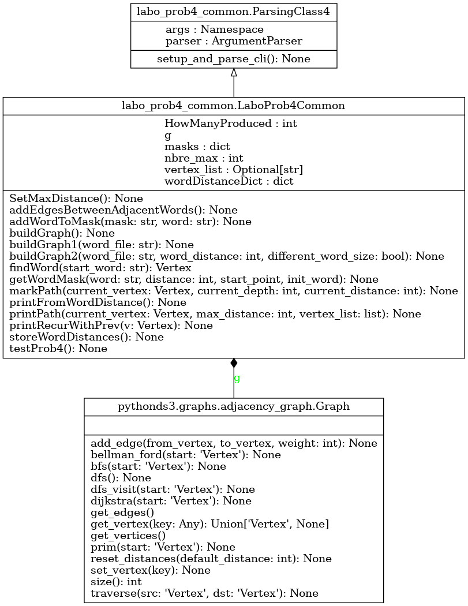

Module labo_prob4_common
Diagramme de classe
{kind=link}
Code du module
Code pour explorer le quatrième exercice du laboratoire - APP du cours GIF270
- L’exercice 4 touche les graphes et les éléments suivants :
Redéfinition de la création du graphe de proximité
- Note :
Le traitement des arguments a été inclus dans la classe ParsingClass4, qui est utilisée dans le code principal
Tous les arguments requis sont présents et accessibles dans ParsingClass4.args
Le traitement du mode verbose vous donne un exemple de l’utilisation des arguments
Copyright 2018-2025, Frédéric Mailhot et Université de Sherbrooke
- class labo_prob4_common.LaboProb4Common[source]
Bases :
ParsingClass4Classe de test pour valider le code de l’échelle de mots - Classe hérite de ParsingClass4, qui lit les paramètres de la ligne de commande - Plusieurs des méthodes définies ici sont incomplètes et doivent être redéfinies dans la classe LaboProb4
- Initialisation d’une nouvelle instance de LaboProb4 :
Utilise l’initialisation de la classe héritée par LaboProb4Common (ParsingClass4)
- Returns :
(void) : Au retour, l’objet est initialisé
- SetMaxDistance() None[source]
Annotation de tous les noeuds avec la distance maximale. Utile avant d’établir la distance avec le mot de départ
- Args :
(void) : Le graphe contenant tous les mots est contenu dans self.g
- Returns :
(void) : Tous les noeuds du graphe sont annotés avec la distance maximale, mais rien n’est retourné
- addEdgesBetweenAdjacentWords() None[source]
Refactorisation du code tiré de la section 8.8, pour partager l’ajout d’arcs entre buildGraph et buildGraph2
- Args :
(void) : Les champs suivants sont utilisés, étant directement disponibles dans l’objet self
g (Graph) : Graphe contenant les noeuds à traiter masks (dict) : Dictionnaire des clés utilisées (masques, par exemple : « _abc », « _bc », etc.)
- Returns :
(void) : Les arcs sont ajoutés directement dans le graphe
- addWordToMask(mask: str, word: str) None[source]
Refactorisation du code tiré de la section 8.8, pour partager l’ajout de mots dans les masques
Args :
mask (str) : Masque auquel ajouter un mot qui a produit ce masque word (str) : Mot à l’origine du masque
- Returns :
(void) : Le mot est ajouté au masque, dans le dictionnaire
- buildGraph1(word_file: str) None[source]
Création du graphe de connectivité entre les mots
Code tiré de la section 8.8 du livre de référence Voir : <https://runestone.academy/ns/books/published/GIF270/Graphs/BuildingtheWordLadderGraph.html>
- À adapter pour l’exercice :
- ajouter un arc entre des mots qui ne sont pas de la même longueur,
mais qui ne diffèrent que par une lettre
- optionnelpermettre des arcs entre des mots qui diffèrent
par 2, 3, 4, etc. lettres (indiqué sur la ligne de commande)
Produit un graphe où les noeuds représentent des mots et les arcs lient des mots qui ne diffèrent entre eux que du nombre de caractères demandé
- Args :
word_file (str) : Nom du fichier de mots à étudier
- Returns :
(void) : L’objet comprend le graphe qui contient tous les mots, avec des arcs entre les mots qui sont liés
- buildGraph2(word_file: str, word_distance: int, different_word_size: bool) None[source]
Création du graphe modifié de connectivité entre les mots
- Modification du code de la fonction buildGraph1() :
- ajouter un arc entre des mots qui ne sont pas de la même longueur,
mais qui ne diffèrent que par une lettre
ajouter un arc entre des mots qui diffèrent par 2, 3, … lettres
Doit produire un graphe où les noeuds représentent des mots et les arcs lient des mots qui ne diffèrent entre eux que du nombre de caractères demandé
- Args :
wordFile (str) : Nom du fichier de mots à étudier wordDistance (int) : Nombre maximum de caractères différents permis entre 2 mots adjacents dans l’échelle different_word_size (bool) : Indique qu’on permet (ou non) des mots de tailles différentes
- Returns :
- (void)Au retour, l’objet contient le nouveau graphe tous les mots,
avec des arcs entre les mots qui sont liés
- findWord(start_word: str) Vertex[source]
Retourne le noeud (vertex) qui correspond au mot passé en paramètre
- Args :
start_word (str) : Mot de départ
- Returns :
(Vertex) : Retourne le noeud recherché
- getWordMask(word: str, distance: int, start_point, init_word) None[source]
Énumération de masques (de type abc, a*bc, ab*c, abc, bc, a*c, ab)
- Code adapté pour l’exercice :
ajout d’un arc entre des mots qui ne sont pas de la même longueur, mais qui ne diffèrent que par une lettre
ajout d’arcs entre des mots qui diffèrent par 2, 3, … lettres (indiqué sur la ligne de commande)
Produit (de façon récursive) tous les masques appropriés
- Args :
word (str) : mot à traiter distance (int) : nombre maximum de caractères différents permis entre deux mots adjacents start_point () : init_word (str) :
- Returns :
(void) : tous les masques nécessaires sont ajoutés aux structures passées en paramètres
- markPath(current_vertex: Vertex, current_depth: int, current_distance: int) None[source]
- Annotation de tous les noeuds du graphe avec la distance la plus courte à partir du mot donné en paramètre :
Marquer le chemin (distance) à partir du noeud courant et de la distance courante
Si un noeud voisin obtient une distance plus petite, le mettre à jour et le traiter
Sinon (noeud voisin a déjà une distance assez petite), ne pas traiter ce noeud
Considérer la distance maximale permise (currentDepth), pour limiter l’exploration du graphe
Si la distance maximale permise est négative, cette méthode s’arrêtera lorsque tous les noeuds auront été traités
- Args :
current_vertex (Vertex) : Noeud à traiter current_depth (int) : Distance maximale à étudier (cesser l’analyse lorsque ce nombre est à 0) current_distance (int) : Distance courante du noeud (mot) de départ
- Returns :
(void) : Les noeuds du graphe sont annotés, mais rien n’est retourné
- printPath(current_vertex: Vertex, max_distance: int, vertex_list: list) None[source]
Impression à l’écran de l’ensemble des chemins ayant la distance requise (à partir du mot de départ)
- Args :
current_vertex (Vertex) : Noeud à traiter max_distance (int) : Distance maximale à imprimer (cesser lorsque ce nombre est à 0) vertex_list (Liste[Vertex]) : liste des noeuds dans le chemin parcouru jusqu’ici
- Returns :
(void) : Tout le travail est fait par la fonction récursive _prinPath()
- class labo_prob4_common.ParsingClass4[source]
Bases :
objectCréation d’un parser prédéfini pour lire les paramètres de la ligne de commande pour le quatrième exercice
- Initialisation d’une nouvelle instance de ParsingClass4 :
Ajoute toutes les valeurs par défaut des paramètres utilisés
Modifie les valeurs redéfinies sur la ligne de commande
- Returns :
(void) : Au retour, l’objet est initialisé
Note
Documentation créée le 20 févr. 2025.